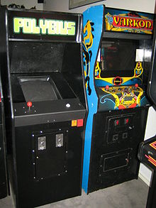

Polybius
Cass Python, 2017-03-25 The year is 1981, Antigua and Barbuda gain independence from the UK, Bob Marley dies of skin cancer, the first Coca-Cola bottling plant in China is opened and the arcade game Polybius was said to have been released.
According to urban legend - and that of coinop.org - the video game had "very limited release, one or two backwater arcades in a suburb of Portland" and that after the arcades were installed there started to be "all kinds of strange stories" about how people who played the game would have "amnesia afterwards, couldn't remember their name or where they lived, etc."
To continue to quote coinop.org...
According to an operator who ran an arcade with one of these games, guys in black coats would
come to collect "records" from the machines. They're not interested in quarters or anything,
they just collected information about how the game was played.
The game was weird looking, kind of abstract, fast action with some puzzle elements, the kids
who played it stopped playing games entirely, one of them became a big anti videogame crusader
or something. We've contacted one person who met him, and he claims the machines disappeard
after a month or so and no one ever heard about them again.
Until the ROM showed up.
Here's what we've found so far:
The bizarre rumors about this game are that it was supposedly developed by some kind of weird
military tech offshoot group, used some kind of proprietary behavior modification algorithms
developed for the CIA or something, kids who played it woke up at night screaming, having
horrible nightmares.
The urban legend continues to say how the machines was visited by men in black, who collected unknown data from the machines, they were allegedly testing responses to the game's psychoactive effects.
It is agreed by most people online that Polybius is made up, Al Kossow on the rec.games.video.arcade.collecting Usenet newsgroup said this about the game;
It was put there by net kook 'CYBERYOGI' who was
> Have you guys read about that supposed game, Polybius? There's a
> description on www.coinop.org about it..
>
Would someone please shoot this story in the head?
also responsible for an annoying April Fools prank
last year.
Even on the coinop.org website people were saying the game was fake, like Siege88 who said this about the game;
All I gotta say is it took me about 5 seconds to realize this
crap is fake. For one, the copyright name translates to "sense-delete".
Whoever thought this thing up figured they were being clever, since
that's exactly what the rumor says the game did. Obviously, if the
game name was really copyrighted, it could be looked up at a patent
office. And as a graphic design major in college, I can tell you
those pictures were definately photoshopped. And not very well
done either. And if you look at the titlescreen to Tempest
(which this game is suppossedly similar to), Atari used
roman numerals for the copyright date- and a much simpler title screen.
So yeah, it's fake.
References
I. Polybius
https://web.archive.org/web/20040602203756/http://www.coinop.org/g.aspx/103223/Polybius.html [archive.is]
II. rec.games.video.arcade.collecting quote
https://groups.google.com/forum/?hl=en#!msg/rec.games.video.arcade.collecting/TCRkBb5kVQk/vvAP4-PHmzkJ [archive.is]
IV. I was wondering about the urban legend of the game "Polybius"
http://msgboard.snopes.com/cgi-bin/ultimatebb.cgi?ubb=get_topic;f=106;t=000528;p=1 [archive.is]
Also See
POLYBIUS - The Video Game That Doesn't Exist
https://www.youtube.com/watch?v=_7X6Yeydgyg [Internet Archive, archive.is]